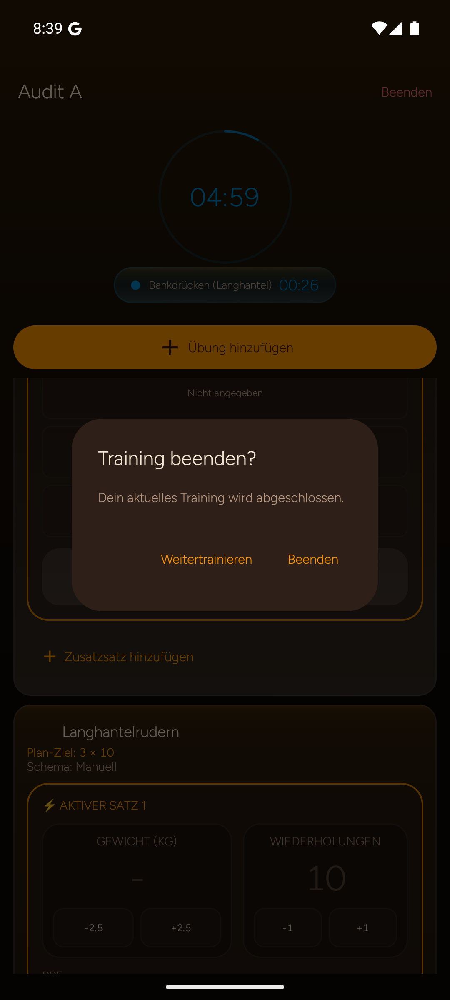

Ein Teiltraining bewusst beenden
Offene Sätze werden benannt, Weitertrainieren bleibt leicht erreichbar und nur bestätigte Sätze werden gespeichert.
Vorher · Original
Android / Dialog
Der allgemeine Dialog macht den offenen Umfang von sieben Sätzen nicht sichtbar. Offene Sätze dürfen nie still als erledigt gelten.
Nachher · Entwurf
Teilabschluss mit Klarheit7 Sätze offen
Diese Auswahl speichert nur, was du bestätigt hast.
Fortschritt 2 von 9 geplanten Sätzen
Mit 2 Sätzen beenden?
7 offene Sätze werden nicht als erledigt markiert.
2 von 9 bleibt lesbar
Die Zahl und die drei betroffenen Übungen stehen vor der Entscheidung im Dialog.
Weitertrainieren zuerst
Die sichere Fortsetzung bleibt sichtbar. Der Teilabschluss ist explizit benannt und speichert nur die zwei Sätze.
Keine stillen Haken
Offene Sätze bleiben offen. Es gibt keine automatische Vervollständigung gültiger, aber unbestätigter Werte.
Nach Bestätigung sind Verlauf und Ergebnis identisch mit den tatsächlich geloggten 2 Sätzen.